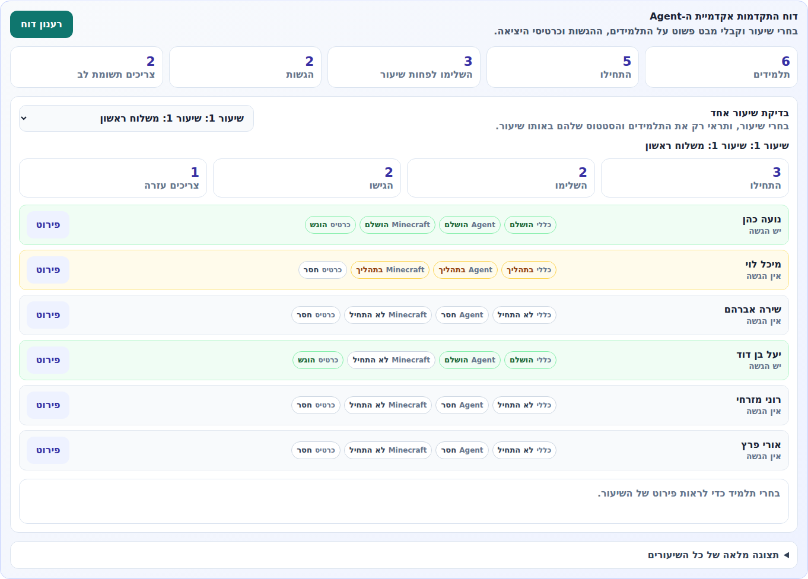
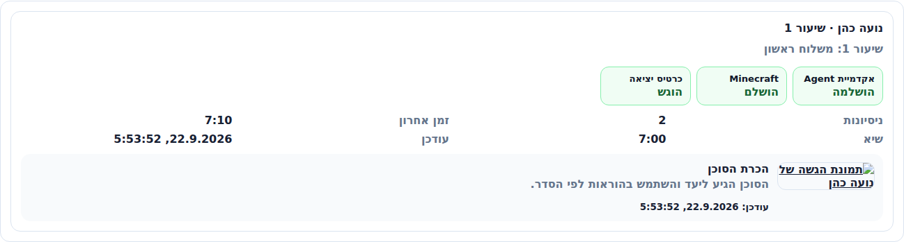

המסך החדש נבנה כך שהמורה לא רואה טבלה גדולה ומפחידה. היא בוחרת שיעור אחד, ורואה רק את התלמידים ואת המצב שלהם באותו שיעור.
זה מסך צפייה בלבד. המורה לא משנה ציונים, לא משנה קודי תלמידים ולא נוגעת בסיסמאות או בלומדות אחרות.
בתוך כרטיס הכיתה מופיע אזור קטן בשם דוח התקדמות אקדמיית ה-Agent. הפעולה היחידה שהמורה צריכה לעשות היא ללחוץ על פתיחת דוח התקדמות.
אחרי פתיחת הדוח, המורה רואה סיכום קטן ובחירת שיעור. ברגע שנבחר שיעור, כל תלמיד מופיע בשורה פשוטה עם ארבעה סימונים:

אם המורה רוצה להבין תלמיד מסוים, היא לוחצת על פירוט. נפתח אזור קטן שמראה את אותו תלמיד באותו שיעור בלבד.

קיימת גם תצוגה מלאה של כל השיעורים, אבל היא מוסתרת תחת כפתור מתקדם למטה. היא לא מוצגת למורה כברירת מחדל, כדי שהמסך יישאר רגוע ופשוט.
ההמלצה שלי להצגה למורות: לקרוא לזה "מסך מצב שיעור". המורה בוחרת שיעור ורואה מי עשה מה. זהו.
צילומי המסך נוצרו מתוך גרסת הדשבורד המעודכנת עם נתוני דמו לצורך המחשה.